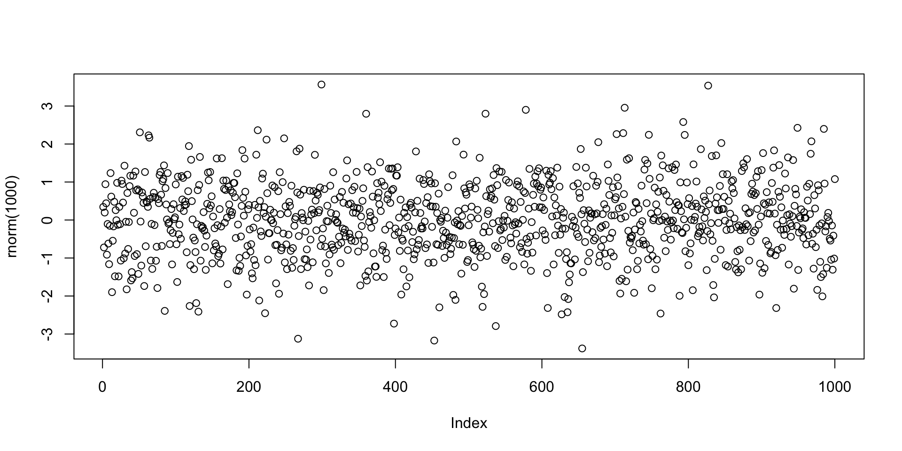

Statistical Models
Lecture 4
Lecture 4:
Hypothesis testing in R
Outline of Lecture 4
- t-test
- R crash course
- t-test in R
- F-test in R
Part 1:
t-test
One-sample Two-sided t-test
Goal: estimate the mean \mu of a normal population N(\mu,\sigma^2). If \mu_0 is guess for \mu H_0 \colon \mu = \mu_0 \qquad H_1 \colon \mu \neq \mu_0
- One-sample means we sample only from one population
- The variance \sigma is unknown
- Suppose the sample size is n, with sample X_1 ,\ldots,X_n
- We can estimate \mu with the statistics T = \frac{\overline{X}-\mu}{S/\sqrt{n}}
- Recall: T \sim t_{n-1} Student’s t distribution with n-1 degrees of freedom
One-sample Two-sided t-test
Procedure for all tests
- Calculation
- Reference statistical tables or numerical values
- Interpretation
One-sample Two-sided t-test
Calculation
- We have n samples available x_1,\ldots,x_n
- Compute sample mean \overline{x} = \frac{1}{n} \sum_{i=1}^n x_i
- Compute the sample standard deviation s = \sqrt{\frac{\sum_{i=1}^n x_i^2 - n \overline{x}^2}{n-1}}
One-sample Two-sided t-test
Calculation
Compute the estimated standard error \mathop{\mathrm{e.s.e.}}= \frac{s}{\sqrt{n}}
Compute the t-statistic t = \frac{\text{estimate } - \text{ hypothesised value}}{\mathop{\mathrm{e.s.e.}}} = \frac{\overline x - \mu_0}{s/\sqrt{n}}
\mu_0 is the value of the null hypothesis H_0
One-sample Two-sided t-test
p-value
After computing t-statistic we need to compute p-value
p-value is a measure of how strange the data is in relation to the null hypothesis
We have 2 options:
- LOW p-value \quad \implies \quad reject H_0
- HIGH p-value \quad \implies \quad do not reject H_0
In this course we reject H_0 for p-values p<0.05
One-sample Two-sided t-test
p-value
For two-sided t-test the p-value is defined as p := 2P(t_{n-1}> |t|) where t_{n-1} is the t distribution with n-1 degrees of freedom
Therefore the p-value is p = 2P(\text{Observing t }| \, \mu=\mu_0)
One-sample Two-sided t-test
p-value
p<0.05 means that the test statistic t is extreme: \,\, P(t_{n-1}> |t|)<0.025
In this case t falls in the grey areas in the t_{n-1} plot below
One-sample Two-sided t-test
p-value
- How to compute p?
- Use statistical tables – Available here
- Use R – next section
One-sample Two-sided t-test
Reference statistical tables (download here)
Tables here allow us to estimate p
Find the table One-sided critical values of the student t distribution
- Look at the row with Degree of Freedom n-1 (or its closest value)
- Find critical value t^* in column 0.025 \qquad Example: n=10, DF =9, t^*=2.262
One-sample Two-sided t-test
Reference statistical tables
The critical value t^* found in the table satisfies P(t_{n-1}>t^*) = 0.025
By definition of p-value for two-sided t-test we have p := 2P(t_{n-1}>|t|)
Therefore, for |t|>t^* \begin{align*} p & := 2P(t_{n-1}>|t|) \\ & < 2P(t_{n-1}>t^*) = 2 \cdot (0.025) = 0.05 \end{align*}
Conclusion: \qquad |t|>t^* \quad \iff \quad p<0.05
One-sample Two-sided t-test
Interpretation
Recall that p is the probability of observing t given H_0 We have two possibilities:
- |t|>t^*
- In this case p<0.05
- The observed statistic t is very unlikely under H_0
- We reject H_0
- |t| \leq t^*
- In this case p>0.05
- The observed statistic t is not unlikely under H_0
- We do not reject H_0
Example: 2008 crisis
- Data: Monthly Consumer Confidence Index (CCI) in 2007 and 2009
- Question: Did the crash of 2008 have lasting impact upon CCI?
- Observation: Data shows a massive drop in CCI between 2009 and 2007
- Method: Use t-test to see if data is sufficient to prove that CCI actually dropped
| CCI | J | F | M | A | M | J | J | A | S | O | N | D |
|---|---|---|---|---|---|---|---|---|---|---|---|---|
| 2007 | 86 | 86 | 88 | 90 | 99 | 97 | 97 | 96 | 99 | 97 | 90 | 90 |
| 2009 | 24 | 22 | 21 | 21 | 19 | 18 | 17 | 18 | 21 | 23 | 22 | 21 |
| Difference | 62 | 64 | 67 | 69 | 80 | 79 | 80 | 78 | 78 | 74 | 68 | 69 |
Example: 2008 crisis
- This is really a two-sample problem – CCI data in 2 populations: 2007 and 2009
- It reduces to a one-sample problem because we have directly comparable units
- If units cannot be compared, then we must use a two-sample approach
- Two-sample approach will be discussed later
| CCI | J | F | M | A | M | J | J | A | S | O | N | D |
|---|---|---|---|---|---|---|---|---|---|---|---|---|
| 2007 | 86 | 86 | 88 | 90 | 99 | 97 | 97 | 96 | 99 | 97 | 90 | 90 |
| 2009 | 24 | 22 | 21 | 21 | 19 | 18 | 17 | 18 | 21 | 23 | 22 | 21 |
| Difference | 62 | 64 | 67 | 69 | 80 | 79 | 80 | 78 | 78 | 74 | 68 | 69 |
Example: 2008 crisis
Setting up the test
- We want to test if there was a change in CCI from 2007 to 2009
- We are really only interested in the difference in CCI
- Let \mu be the (unknown) average difference in CCI
- The null hypothesis is that there was (on average) no change in CCI H_0 \colon \mu = 0
- The alternative hypothesis is that there was some change: H_1 \colon \mu \neq 0
- Note that this is a two-sided test
Example: 2008 crisis
Calculation
Using the available data, we need to compute:
Sample mean and standard deviation \overline{x} = \frac{1}{n} \sum_{i=1}^n x_i \qquad s = \sqrt{\frac{\sum_{i=1}^n x_i^2 - n \overline{x}^2}{n-1}}
Test statistic t = \frac{\overline x - \mu_0}{s/\sqrt{n}}
Example: 2008 crisis
Calculation
| CCI | J | F | M | A | M | J | J | A | S | O | N | D |
|---|---|---|---|---|---|---|---|---|---|---|---|---|
| Difference | 62 | 64 | 67 | 69 | 80 | 79 | 80 | 78 | 78 | 74 | 68 | 69 |
\begin{align*} \overline{x} & =\frac{1}{n} \sum_{i=1}^{n} x_i=\frac{1}{12} \left(62+64+67+{\ldots}+68+69\right)=\frac{868}{12}=72.33 \\ \sum_{i=1}^{n} x_i^2 & = 62^2+64^2+67^2+{\ldots}+68^2+69^2 = 63260 \\ s & = \sqrt{ \frac{\sum_{i=1}^n x_i^2 - n \overline{x}^2}{n-1} } = \sqrt{\frac{63260-12\left(\frac{868}{12}\right)^2}{11}} = \sqrt{\frac{474.666}{11}} = 6.5689 \end{align*}
Example: 2008 crisis
Calculation
- The sample size is n=12
- The sample mean is \overline{x}=72.33
- The sample standard deviation is s = 6.5689
- The hypothesized mean is \mu_0 = 0
- The t-statistic is t = \frac{\overline{x} - \mu_0}{s/\sqrt{n}} = \frac{72.33 - 0}{6.5689/\sqrt{12}} = 38.145
Example: 2008 crisis
Reference statistical tables
Find the table One-sided critical values of the student t distribution
- Find row with DF = n-1 (or closest). Find critical value t^* in column 0.025
- In our case: n=12, DF =11, t^*=2.201
Example: 2008 crisis
Reference statistical tables
- Plot of t_{11} distribution. White area is 0.95, shaded area is 0.05
- Any statistic |t|>t^* = 2.201 happens with probability p<0.025

Example: 2008 crisis
Interpretation
We have computed:
- Test statistic t = 38.145
- Critical value t^* = 2.201
Therefore |t| = 38.145 > 2.201 = t^*
This implies rejecting the null hypothesis H_0 \colon \mu = 0
Example: 2008 crisis
Interpretation
Therefore the mean difference in CCI is \mu \neq 0
The sample mean difference is positive (\bar{x}=72.33)
Conclusions:
- Consumer confidence is higher in 2007 than in 2009
- The 2008 crash has reduced consumer confidence
Part 2:
R crash course
What is R?
- R is a high-level programming language (like Python)
- This means R deals automatically with some details of computer execution:
- Memory allocation
- Resources allocation
- R is focused on manipulating and analyzing data
References
For all matters R
Concise Statistics with R
Comprehensive R manual
Installing R
- R is freely available on Windows, Mac OS and Linux
- To install:
- Download R from CRAN https://cran.r-project.org
- Make sure you choose the right version for your system
- Follow the instructions to install
How to use R?
We have installed R. What now?
The R console can be booted in two ways:
- Find the R application on your machine
- Open a terminal, type R, exectute
R application
This is how the R Console looks on the Mac OS app
R from terminal
This is how the R Console looks on the Mac Terminal
What can R do?
- R Console is waiting for commands
- Commands can be typed after the symbol
> - Press
Enterto execute a command
- Commands can be typed after the symbol
Example
Few lines of code can lead to impressive results
Example: Plotting 1000 values randomly generated from normal distribution
R as a calculator
R can perform basic mathematical operations
Below you can see R code and the corresponding answer
More complex code
R Console is fine for short codes
For longer code and function authoring use R scripts
- Write your code in a text editor
- Save your code to a plain text file with
.txtor.Rextension - Execute your code in the R Console when you are done
Examples of text editors
- TextPad (Windows)
- TextEdit (MacOS)
- VisualStudio Code (Cross platform)
RStudio
RStudio is an alternative to R Console and text editors: Download here
RStudio includes:
- Direct-submission code editor
- Separate point-and-click panes for files, objects, and project management
- Creation of markup documents incorporating R code
Working Directory
R session has a working directory associated with it
Unless specified, R will use a default working directory
To check the location of the working directory, use the
getwdfunctionOn my MacOS system I get \qquad
File paths are always enclosed in double quotation marks
Note that R uses forward slashes (not backslashes) for paths
You can change the default working directory using the function
setwd
- File path can be relative to current working directory or full (system root drive)
Working Directory
RStudio
In RStudio you can set the working directory from the menu bar:
- Session
->Set Working Directory->Choose Directory
Example - Your first R code
- Open a text editor and copy paste the below code
# This codes sums two numbers and prints result on screen
# Here is a function to sum two numbers
sum_numbers <- function(num1, num2) {
return(num1 + num2)
}
# Call the function with arguments 2 and 1
# The result of the sum 2 + 1 is stored in result
result <- sum_numbers(2, 1)
# Print the result on screen
print(result)Example - Your first R code
Save to a plain text file named either
my_first_code.Rmy_first_code.txt
Move this file to Desktop
Open the R Console and change working directory to Desktop
Example - Your first R code
- Run your code in the R Console by typying either
- You should get the following output
[1] 3R Packages
- The base installation of R comes ready with:
- Commands for numeric calculations
- Common statistical analyses
- Plotting and visualization
- More specialized techniques and data sets are contained in packages (libraries)
Help!
- R comes with help files that you can use to search for particular functionality
- For example you can check out how to precisely use a given function
- To call for help type
help(object_name)
Further Help
- Sometimes the output of
help()can be cryptic - You can always search using Google
- Qualify the search with R or the name of an R package
- Paste an error message – chances are somebody has already solved your problem
- Even better, there are internet search sites that are specialized for R searches
Exiting R and Saving
To quit the R Console type q()
- You will be asked if you want to save your session
- If you say yes, the session will be saved in a
.RDatafile in the working directory - Such file can be loaded later to resume where you left
The above saved session is irrelevant:
- You should be writing code in R Scripts
- Code should be save in
.txtor.Rfiles
Plotting random numbers
Let us go back to the example of the command plot(rnorm(1000))
The function rnorm(n) outputs n randomly generated numbers from N(0,1)
These can then be plotted by concatenating the plot command
Note:
The values plotted (next slide) are, for sure, different from the ones listed above
This is because every time you call
rnorm(5)new values are generatedWe need to store the generated values if we want to re-use them
Plotting random numbers

Assignments
- Values can be stored in symbolic variables or objects
- To store values into variables we use assignments
- The assignment operator in R is denoted by
<- - The (single) symbol
<-denotes an arrow pointing to the variable to which the value is assigned
Assignments
Example
- To assign the value
2to the variablexenterx <- 2 - To recover the value in
xjust typex
Assignments
Example
- From now on,
xhas the value2 - The variable
xcan be used in subsequent operations - Such operations do not alter the value of
x
Vectors
- We saw how to store a single value in a variable
- Series of values can be stored in vectors
- Vectors can be constructed via the command
c()
Vectorized arithmetic
- A vector is handled by R as a single object
- You can do calculations with vectors, as long as they are of the same length
# Constuct two vectors of radius and height of 6 cylinders
radius <- c(6, 7, 5, 9, 9, 7)
height <- c(1.7, 1.8, 1.6, 2, 1, 1.9)
# Compute Volume and store it in "volume"
volume <- pi * radius^2 * height
# Print volume
volume[1] 192.2655 277.0885 125.6637 508.9380 254.4690 292.4823- Notice that operations are exectuted component-wise
Vectorized arithmetic
- If two vectors do not have the same length then the shorter vector is cycled
- This is called broadcasting
- In the example the vector
ahas 6 components whilebhas 2 components - The operation
a+bis executed as follows:bis copied 3 times to match the length ofaa + bis then obtained by summing a + \tilde{b} = (1, 2, 3, 4, 5, 6) + (0, 1, 0, 1, 0, 1) = (1, 3, 3, 5, 5, 7)
Vectorized arithmetic
Useful applications of broadcasting are:
- Multiplying a vector by a scalar
- Adding a scalar to each component of a vector
Sum and length
Two very useful vector operators are:
sum(x)which returns the sum of the components ofxlength(x)which returns the length ofx
Computing sample mean and variance
Using vectorized operations
Given a vector \mathbf{x}= (x_1,\ldots,x_n) we want to compute sample mean and variance \overline{x} = \frac{1}{n} \sum_{i=1}^n x_i \,, \qquad s^2 = \frac{\sum_{i=1}^n (x_i - \overline{x})^2 }{n-1}
Computing sample mean and variance
Using built in functions
- R is a statistical language
- There are built in functions to compute sample mean and variance:
mean(x)computes the sample mean ofxsd(x)computes the sample standard deviation ofxsd(x)^2computes the sample variance ofx
Graphics
- R has extensive built in graphing functions
- Even fancier graphing functions are contained in the library
ggplot2(see link)
Style guide
Style guide
File names
They should be meaningful and end in .R
Style guide
Objects names
- Objects names shoulde be lowercase
- Use an underscore (
_) to separate words within a name - Variable names should be nouns, not verbs
- Come up with names that are concise and meaningful
Style guide
Functions names
- Name functions with
BigCamelCase(link) - This is to clearly distinguish functions from other objects
- Functions names should be verbs
- Come up with names that are concise and meaningful
Style guide
Object and functions names
If possible avoid using names of existing functions and variables
Style guide
Assignment
Use <- and not = for assignment
Style guide
Spacing
- Spacing is really something you should be careful about
- Place spaces around all infix operators (
=,+,-,<-, etc.) - Place spaces around
=when calling a function - Always put a space after a comma, never before (like in regular English)
Style guide
Spacing with Brackets
- Do not place spaces around code in parentheses or square brackets
- Unless there is a comma
Style guide
Spacing - Exceptions
- Symbols
:,::and:::do not need spacing
- Place a space before left parentheses, except in a function call
Style guide
Extra Spacing
Extra spacing is ok if it improves alignment of = or <-
Style guide
Curly braces
- An opening curly brace should never go on its own line
- An opening curly brace should always be followed by a new line
- Always indent the code inside curly braces
Style guide
Line length
- Limit code to 80 characters per line
- This fits comfortably on a printed page
- If you run out of room, encapsulate some of the work in separate function
Style guide
Indentation
- When indenting your code, use two spaces
- Never use tabs or mix tabs and spaces
- Indentation should be used for functions, if, for, etc.
Style guide
Indentation - Exception
If a function definition runs over multiple lines, indent the second line to where the definition starts
Style guide
Use explicit returns
- Functions can return objects
- R has an implicit return feature
- Do not rely on this feature, but explicitly mention
return(object)
Style guide
Comments
- Most importantly: Comment your code
- Each line of a comment should begin with comment symbol
#and a single space
- Use commented lines of
-and=to break up code into easily readable chunks
Data
- Just think of R or any other software package as a computer that’s too big to fit in your pocket! \bullet Two basic ways of reading data into R
Comments
#